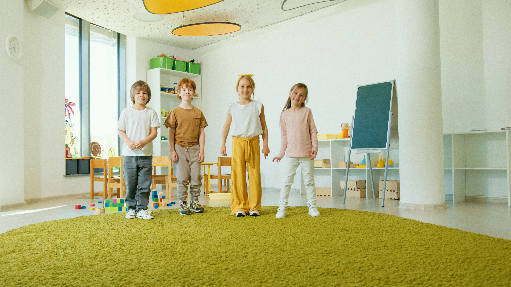

박혜란, Ph.D, BCBA, LBA
학력
- Sungkyunkwan University 아동학/심리학 학사
- University of Kansas 특수교육 석사 및 박사
i:ON Academy ABA에 오신 것을 환영합니다
저희 팀은 일상 속 의미 있는 진전을 통해 아이들이 의사소통, 사회적 관계, 독립성, 긍정적인 행동을 키워갈 수 있도록 지원합니다.
서비스 보기
i:ON Academy ABA에서,
“I”는 한국어 “아이”를 의미합니다. 모든 아이가 고유하고 무한한 가능성을 지니고 있음을 기억하게 하는 이름입니다.
“ON”은 아이의 가능성을 켠다는 의미를 담고 있습니다.
저희는 그 가능성이 자라날 수 있도록 모든 과정에서 함께합니다.
전문가 소개

서비스
자주 묻는 질문
환경에 따라 다릅니다. ABA 팀은 학교, 가정, 클리닉 등 다양한 환경에서 지원할 수 있습니다. 다만 일부 학교나 치료 기관은 사전 승인이 필요하거나 외부 제공자의 직접 개입을 허용하지 않을 수 있습니다.
어떤 경우에는 관찰은 가능하지만 직접 개입은 제한될 수 있습니다. 가장 좋은 방법은 해당 기관의 관리자나 결정권자와 직접 확인하는 것입니다.
시작은 간단합니다.
먼저 30분 상담 신청서를 작성해 주세요. 상담을 통해 자녀의 필요를 함께 논의하고, 저희가 어떤 도움을 드릴 수 있는지 안내해드립니다.
서로 적합하다고 판단되면, 평가 절차를 시작하는 동시에 보험 승인 절차도 함께 진행합니다.
절차와 저희 접근 방식에 대한 자세한 내용은 아래 Resources PDF인 “ABA란 무엇인가?”와 “The i:ON Difference”를 참고해 주세요.
시작은 간단합니다.
저희는 만 2세부터 21세까지의 아동 및 청소년을 대상으로 서비스를 제공하며, 자폐 스펙트럼 장애(ASD) 레벨 1~3 진단을 받은 분들을 지원합니다.
현재 주요 보험사들과 등록 절차를 진행 중입니다. 보장 범위에 대한 최신 정보는 아래 이메일로 문의해 주세요: admin@gmail.com
정보를 충분히 아는 부모님은 더 좋은 결정을 내릴 수 있습니다. 행동분석 분야는 BACB에서 공개한 엄격한 윤리 강령을 따릅니다. 제공자를 평가할 때 이 기준을 참고하시기를 권합니다.
온라인에는 ABA에 대한 잘못된 정보도 많지만, 동시에 효과를 뒷받침하는 수많은 연구도 있습니다. 걱정되는 부분이 있다면 충분히 이해하고 편안해질 때까지 질문하셔도 됩니다.
부모님은 명확한 답을 듣고 아이에게 가장 적합한 결정을 내릴 권리가 있습니다.
윤리적으로 제공자는 아이가 ABA를 반드시 “필요로 한다”고 단정할 수 없습니다. 대신 아이의 개별적인 필요를 평가하고 적절한 서비스와 연결될 수 있도록 돕습니다.
다음과 같은 경우 ABA가 도움이 될 수 있습니다.
효과적인 중재 방법은 존재하지만, 치료 시작 여부는 언제나 부모님의 선택입니다.
네. ABA는 가족의 참여를 매우 중요하게 생각합니다.
특히 행동 감소 프로그램에서는 보호자 간의 일관성이 중요합니다. 부모님은 단순한 관찰자가 아니라 팀의 핵심 구성원입니다.
이렇게 생각해 주세요. 부모님이 쿼터백은 아닐 수 있지만, 모든 과정에서 매우 중요한 선수입니다.
제공자마다 구체적인 기대 사항은 다를 수 있지만, 일반적으로 부모님께는 다음과 같은 참여가 권장됩니다.
부모님의 참여는 아이의 성장과 진전에 매우 중요한 역할을 합니다.
자료
부모님 지원 가이드아래의 파일들을 눌러서 보세요